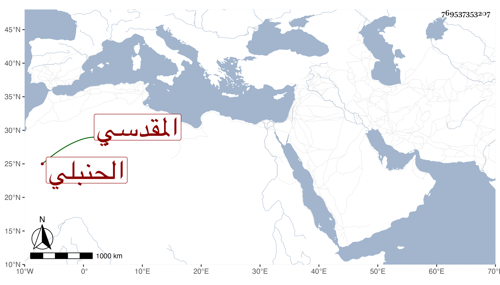

0902Sakhawi.DawLamic.ITO20230111-ara1.EIS1600.769537353207
Biography ID: 769537353207
221
أحمد بن محمد بن أحمد بن التقي سليمان بن حمزة الشهاب بن العز المقدسي الحنبلي . سمع من العز محمد بن إبراهيم بن عبد الله بن أبي عمر وغيره . وناب في الحكم عن أخيه البدر . مات في المحرم سنة اثنتين وله إحدى وستون سنة ، قاله شيخنا في إنبائه قال ولي منه إجازة ، وذكره في معجمه وقال أنه ولد سنة إحدى وأربعين ومن مروياته المنتقى من أربعي عبد الخالق بن زاهر سمعه على العز المذكور . وذكره المقريزي في عقوده باختصار .
